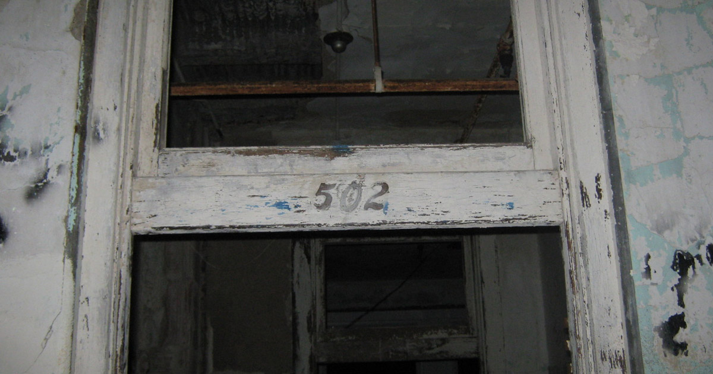
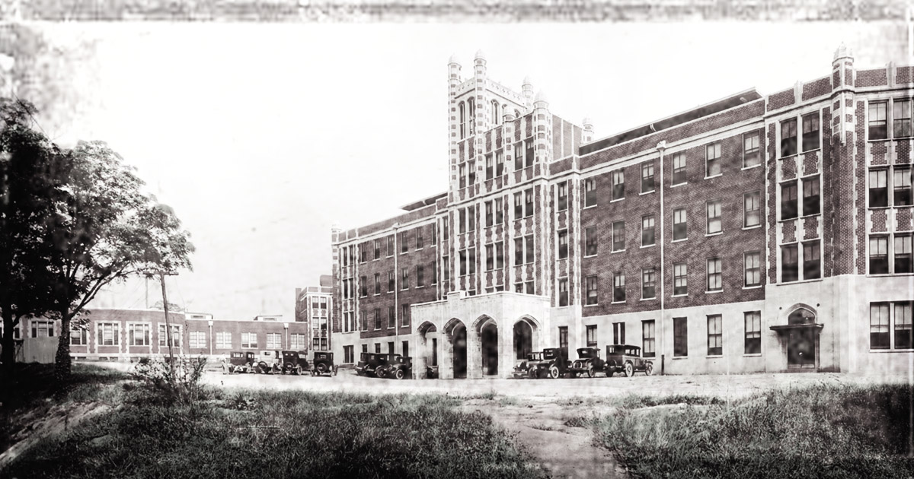
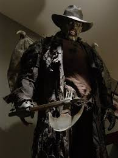
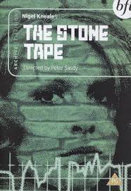
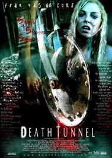

ROOM 502

Introduction
Waverly Hills Sanatorium was established and officially opened in 1910 as a specialized medical facility for treating tuberculosis patients during an era when the disease posed a significant national threat. After decades of medical service, the building underwent a functional transition and was later reopened as a geriatric care center. Eventually, the facility was permanently closed. Due to its architectural and historical significance, it has been listed as a protected historical site in Kentucky, ensuring its structure remains a testament to a vital era in American medical and social history.
History

Waverly Hills Sanatorium is chronicled on many of the “scariest places” lists by paranormal historians. Many experts place it in the top 3 of the most haunted and scariest places preserved. Situated in the southwestern area of Louisville, Kentucky, the sanatorium is renowned for being the most haunted asylum in the entire world. It is rife with reports ranging from moving objects and cold spots to the malicious appearance of ghostly doppelgängers—entities that mimic the visitors themselves. The stories are truly astonishing, and the infamous Room 502 is located within this very site.
The location and former building where the sanatorium stands now was originally purchased in 1883 by a military man, Major Thomas Hays. Due to the remote location at the time, the initial building was fashioned into a large one-room schoolhouse as the nearest school was several miles away. A woman named Lizzie Lee served as the first teacher there and she held a special fondness in her heart for author Walter Scotts’s Waverly Novels series. Major Hays needed a name and found Lee’s penchant for the Waverly Novels to be the perfect name and the Waverly School was formed. At the turn of the 20th Century, the region was hit very hard with a severe tuberculosis outbreak and the land the Waverly school was on was purchased. Subsequently, the building and land were massively expanded and hospital construction was done so as to house the influx of tuberculosis patients
Roughly beginning in 1911, for the next three years, more and more beds and building extensions were added to create a five-story, four-hundred-bed building for those stricken with tuberculosis. A children’s wing was even added; however, as the numbers of cured children improved, feeble adults who could not care for themselves in the outside world were sent to live in this wing.
In 1962, as tuberculosis cases declined, Waverly began accepting geriatric dementia patients. For the next twenty years, the facility cared for these patients until the state of Kentucky stepped in to close the sanatorium in 1982 due to reports of severe neglect. It was at this turning point that the infamous horror stories began to emerge.
There is a frightening history of mass death and abuse of patients during the years the hospital was used as a geriatric hospital.
An estimated claim of 63,000 people died in Waverly Hills Sanatorium, and the deaths were stopped or minimized after the discovery of the antibiotic streptomycin, which was very successful in treating tuberculosis.
Liberary
The Waverly Hills Sanitarium in Louisville Kentucky has it all-- cold spots, disembodied voices, and ghosts roaming the halls. It sits on a hill overlooking the city and seems like a reigning fortress of gloom in its eerie, decaying state.
Ghosts have been seen in the form of shadow people and ectoplasm clouds, and even in full apparition form. Cries and screams are frequently heard in the lonely, moldering halls.
Others have seen spectral images floating in the windows and heard disembodied voices say: "Get out!"
Today, Room 502 is the subject of chilling reports featuring vicious cold spots and objects literally flying past visitors. EVP (Electronic Voice Phenomenon) sessions have captured the words "get back" inside the room, and the phantom screeching of the chair Mary kicked out from under herself before hanging is also audibly heard.

Furthermore, the "Body Chute" at Waverly Hills was frequently utilized as patients succumbed to their illnesses; bodies were sent down through a tunnel where they were gathered and transported via train to unknown destinations. EVPs collected from this area of the sanatorium are haunting in their simplicity, capturing words such as "pain" and "leave now."
Emerge from the body chute tunnel and you’re likely to catch a glimpse of Timmy, a child ghost there. A young patient who passed away at the age of six, Timmy had a fondness for toy balls. Over the years, visitors bring in toy balls and leave them for Timmy to play with and many a time people have claimed to see one of these toy balls in a room roll furiously back in forth on the floor unassisted, before Timmy’s spirit rolls it at them.
In 1932, another nurse who worked in room 502 supposedly committed suicide when she jumped from the balcony of the roof. To this day, the motive remains unknown. In addition to hearing voices on this floor, witnesses have reported seeing the full-body apparition of a female nurse in white. Many have also noted that room 502 evokes an "unsettling" feeling of immense despair and profound sadness.
The experience of one visitor captures the essence of the mystery surrounding the sanatorium: "I’ve visited the place twice. Honestly, it’s extremely strange. I felt something I’ve never felt before when I was in the tunnel; it was like a cold chill, but without physical shivering. I don’t know if ghosts exist there, but I know for sure that it has an atmosphere unlike any ordinary building. If we assume the atmosphere is linked to your psychological state, then perhaps; but I believe it’s deeper than that. It’s simply a terrifying place."
A visitor recounts her experience during a tour organized by a local radio station: "I only experienced two things that were odd. First, I captured what sounds like a hyper-excited child talking very fast into my recorder while I was on a floor by myself. Second, while standing in a doorway on one of the wards on a 75+ degree summer night, I felt a cold spot that started on my left shoulder and traveled down to my hand and stayed there for a while. It was weird that only my left hand and shoulder felt the cold. The sensation didn’t disappear until I moved out of the room."
Theories

"The Creeper" is hands down the most intimidating spirit in the entire sanatorium. Manifesting as a twisted shadow creature, it is most frequently spotted in the long sanatorium hallways. When seen, it exhibits long, crudely twisted arms and legs, and has been known to approach unlucky visitors in various unsettling ways. Most commonly, it is spotted crawling along the floor, while at other times, The Creeper is seen on the ceiling, slowly approaching the unsuspecting. One of the primary associations of being in the presence of The Creeper is a profound sense of doom. Paranormal investigators have claimed that when The Creeper is spotted, they are suddenly saturated with an overwhelming sense of dread and impending doom. More often than not, they are forced to leave the property immediately, as it takes hours to recover from the intense psychological impact.

So where did the term “Stone Tape Theory” come from? Contrary to popular belief, it did not originate in T. C. Lethbridge’s 1961 book, Ghost and Ghoul. While Lethbridge was heavily influenced by Price’s work and wrote at length about his belief that objects could store events via certain energy fields, he never actually referred to “tapes made of stone.”

The association between Lethbridge and the theory stems from a retroactive application of the term following the broadcast of a specific BBC 2 teleplay on Christmas Day in 1972: The Stone Tape, written by Nigel Kneale. The movie features a room built entirely of stone within a Victorian mansion, which is discovered to be haunted by a particularly gruesome memory: the death of a young woman within its walls more than 80 years prior.
The characters in the film surmise that the stone room is, in essence, a kind of tape. This tape holds the recording of a young woman’s death. To those endowed with a particular sensitivity, the room plays back the memory of her final moments over and over again, functioning much like a physical recording medium that loops its content.
The "Stone Tape Theory" is a prominent hypothesis in the paranormal field, suggesting that physical materials—such as stone or the walls of a building—can "record" intense emotional energy or traumatic events from the past (such as tragic accidents or powerful emotions). This theory posits that these materials later "playback" the stored energy under certain conditions, manifesting as residual hauntings or strange auditory phenomena. While rooted in older concepts, the theory became widely popularized in the 20th century through media, most notably the 1972 film "The Stone Tape."
William G. Roll, an American psychologist and parapsychologist, has contributed significantly to our understanding of place memory. In contrast, the Stone Tape Theory has its earliest roots in the United Kingdom and has been discussed and explored by 19th-century intellectualists and psychic researchers such as Charles Babbage, Eleonor Sidgwick, and Edmund Gurney.
Roll's research delved into the idea that these residual memories may be imprinted on the environment by intense emotions or traumatic events. For instance, locations where tragic accidents or acts of violence occurred might carry the emotional energy of those events, and individuals present in such places may feel a sense of unease or experience vivid recollections associated with those events.

Advocates of the Stone Tape Theory argue that this residual energy, under certain circumstances, can manifest as apparitions, sounds, or visual phenomena, effectively "playing back" the events stored within the materials. This concept implies that the environment itself can retain the memories of its history, and these memories can potentially be accessed or experienced by individuals.
In the 20th century, the concept of objects having the capacity to retain and replay historical occurrences was reintroduced in 1939 and 1940 by H. H. Price, who was the president of the Society for Psychical Research (SPR) at the time. Price put forth the notion of a "psychic ether" acting as an intermediary substance bridging the gap between the spiritual and physical realms, suggesting that this ether allowed objects to preserve imprints of past emotions or experiences. In his written works, he asserted that scientific methods should be capable of validating the existence of these imprints, although they remained unproven hypotheses at the time.
The Stone Tape Theory, on the other hand, originates in the United Kingdom and is often discussed by intellectualists and psychic researchers. This theory takes its name from the idea that certain building materials, such as stone, can act as a "tape" or recording medium for past events. It suggests that locations, particularly those with a history of intense emotions, might have residual energy imprinted on the materials, which can be replayed under specific conditions.
This concept isn’t new. It stems from older folklore but was popularised in the 1970s by a British TV drama called The Stone Tape, written by Nigel Kneale. The programme depicted scientists discovering that the walls of a building had somehow captured a past event, creating what appeared to be a haunting. The fictional story resonated with many paranormal researchers and helped shape the theory’s modern form.
The New Age movement and spiritual physics offer a distinct perspective that does not view phenomena as "ghosts" in the traditional, conscious sense, but rather as a form of Spatial Memory. This theory posits that the walls and structural materials in places like Waverly Hills have literally "stored" the intense frequencies generated by the fear, pain, and "intent of death" experienced by its inhabitants. Since Room 502 is situated at a high elevation, it is viewed as a focal point of "stronger energy"; the collective suffering of thousands has created a permanent distortion in the energetic field. Consequently, the phenomena witnessed are not autonomous entities but an energetic interaction with the environment, explaining why sensitive individuals experience dizziness or hallucinations when entering this charged field.
Psychologists like Carl Jung link this to a "collective psychological myth," where the feeling of preserved memories is created from cultural anxieties or mass hysteria. Phenomena like lingering ghosts are explained as a psychological effect, such as the placebo effect or confirmation bias, where people expect to see something strange in historical places.
As geoscientist and sham inquiry researcher Sharon Hill noted at the Skeptical Inquirer in 2018, it’s difficult to trace the history of the stone tape theory — largely because it hasn’t always gone by that particular name. Researchers and theorists have been writing about the ideas central to the theory for nearly 200 years, but it’s only within the past 50 years or so that the stone tape moniker arrived.
Most researchers point to mathematician Charles Babbage’s 1838 work The Ninth Bridgewater Treatise as one of the earliest, if not the earliest, mention of what would later come to be referred to as “place-memory” — the ability of a place to retain echoes of events that occurred there. In chapter nine, “On the permanent Impression of our Words and Actions on the Globe we inhabit” (which should give you an idea of what’s in store all on its own), Babbage wrote:
“The air itself is one vast library, on whose pages are for ever written all that man has ever said or women whispered. There, in their mutable but unerring characters, mixed with the earliest, as well as with the latest sighs of mortality, stand for ever recorded, vows unredeemed, promises unfulfilled, perpetuating in the united movements of each particle, the testimony of man’s changeful will.”
When the Society for Psychical Research was founded in 1882, the concept of place-memory factored prominently in many of the organization’s early work and theories. In 1885, for example, Eleanor Sidgwick, physicist and eventual President of the Society for Psychical Research, described in an issue of the Journal of the Society for Psychical Research several possible explanations for what, exactly, a haunting might be — and when it came to houses or other structures, she posited that there could be “something in the actual building itself some subtle physical influence which produces in the brain that effect which, in its turn, becomes the cause of a hallucination.” (Fellow researcher and SPR founding member Frederic W. H. Myers later quoted Sidgwick’s piece at length in Human Personality and Its Survival of Bodily Death, first published in 1903.)
One of Sidgwick’s contemporaries, Edmund Gurney, further elaborated on the idea of place-memory. Writing in the Journal of the Society for Psychical Research in 1888, he expressed his belief that certain apparitions were not so much “hauntings” in the traditional sense, but rather “the survival of a mere image, impressed … by that person’s physical organism, and perceptible at times to those endowed with some cognate form of sensitiveness.” Gurney wasn’t sure exactly how this process of “impressing” worked—“we cannot guess how, or we cannot guess what,” he noted—but the idea was a compelling one all the same: it suggested that there might be a process by which a memory might be recorded on a place or object.
According to the Stone Tape Theory, not every fleeting moment is recorded; the process requires a "High-Impact Event" to be impressed upon the physical fabric of the surroundings. The environment's capacity for "recording" depends entirely on the magnitude of the emotional charge released during the event; the more intense the emotions, the higher the likelihood they remain as a lasting vestige. These impactful events manifest in three primary forms: first, severe and sudden trauma, such as suicide or pure terror; second, intense and prolonged emotional focus that charges the space with specific frequencies; and finally, repetitive suffering over extended periods. This explains why old hospitals and prisons (like Waverly Hills) are massive energetic reservoirs, where the accumulated suffering of thousands has created an indelible spatial imprint.
According to this belief, not all materials possess the same capacity to preserve events, as not everything in the environment is "recorded." Instead, the process requires the existence of a recordable medium with specific physical properties. Natural materials such as stone, old concrete, wood, and metals are considered the most susceptible to energy storage, while water is classified as the ultimate medium for transmitting and retaining emotional frequencies.This is precisely why researchers focus their attention on ancient buildings with thick walls and locations characterized by high humidity or elevation. These factors act as natural catalysts that preserve "energetic data" and prevent it from dissipating, turning sites like Waverly Hills into massive "hard drives" for historical human suffering.
According to this perspective, spatial memory does not manifest continuously; instead, it remains in a "Dormant State", where energetic information lies "asleep" within the building's molecular structure. For this memory to transition from a silent recording to a tangible phenomenon, an external Trigger must be present to initiate "playback." These triggers vary, ranging from the presence of a sensitive individual acting as a receiver, to sudden changes in humidity or temperature, the onset of night and total silence which reduces electromagnetic interference, or the presence of a specific electromagnetic field that activates stored data. This explains why sites like Waverly Hills may appear completely dormant at times, only to pulse with terrifying activity once the necessary catalytic conditions are met.
In cognitive psychology and human memory science, the most probable and scientifically grounded explanation for the link between events and locations is the process of Encoding. This is the biological mechanism by which the brain records information or memories and anchors them to a specific place, object, or event. Consequently, a physical stimulus—such as seeing a specific cafe or the doorway of a sanatorium—acts as a "trigger" that automatically retrieves the stored memory. This phenomenon is scientifically categorized under Spatial Encoding and Contextual Encoding, explaining how the mind binds data to specific images, scents, or geographical coordinates. The profound nature of this connection is showcased in the ancient "Method of Loci" (Memory Palace), a technique where individuals link information to familiar mental landscapes like rooms or streets, proving that our brains are evolutionarily wired to use physical space as a vessel for memory and meaning.
A number of other researchers and theorists continued to develop the idea of place-memory and residual hauntings as the decades passed, including H. H. Price. In his 1939 work, Haunting and the Psychic Ether Hypothesis, Price posited that traces of memory might not only pin themselves to certain objects, but that these traces would reveal themselves to people with an aptitude for or sensitivity toward paranormal or supernatural forces.
The traces, wrote Price, were “a result of the emotions or other experiences of some person who formerly inhabited the room, much as finger-prints result automatically from our handling of a wine-glass or a poker.” When people sensitive to the paranormal experienced the memories from these traces, they were essentially “playing back” the recording made by the “impressing” process posited by Gurney.
In studies such as those at St. Mary's University (GIS for paranormal analysis), scientists suggest that materials such as quartz or magnetite may be linked to the phenomena.
Hauntings — according to those who believe in them, in any event — come in a number of different flavors, so to speak. Intelligent hauntings involve a spirit or entity who is aware of and can consciously interact with humans and other living beings — think Marley’s ghost in A Christmas Carol. Poltergeist hauntings usually involve the entity interfering physically with objects or people, as in the case of the Enfield Poltergeist. (The word “poltergeist” itself is German for “noisy ghost.”) Demonic hauntings aim to “break down a person’s free will so that [the demon] can take over and possess the individual,” per the Psychic Library — e.g., what happened to “Robbie Manheim,” the pseudonymous case of demonic possession on which William Peter Blatty based the story of his 1971 novel The Exorcist and its subsequent big screen adaptation.
Hauntings—according to those who believe in them—come in a variety of distinct forms or "flavors," each characterized by its level of interaction with the physical world. The first is Intelligent Hauntings, involving a spirit or entity that is self-aware and capable of conscious interaction with living beings. The second is Poltergeist Hauntings (from the German for "noisy ghost"), which typically involves physical interference with objects or people, such as moving furniture, famously documented in cases like the Enfield Poltergeist. Finally, there is Demonic Hauntings, which, according to the Psychic Library, aim to "break down a person's free will" to achieve full possession—a phenomenon epitomized by the case of "Robbie Manheim," the inspiration behind the legendary novel and film The Exorcist.
Then there are Residual Hauntings: hauntings characterized not by the interactions between an entity and humans, but by a lack of interactions. The Psychic Library describes residual hauntings as “remnants of past traumatic events that happened at or near a location.” They might consist of sounds, smells, or scenes—but what they don’t do is change.
The process described by the theory is meant to be analogous to magnetic tape recording. This variety of recording, which dates back to 1878, “works by converting electrical audio signals into magnetic energy, which imprints a record of the signal onto a moving tape covered in magnetic particles.” Recording film or video functions in much the same way.
If the possession consists of a spectrum that appears, it may manifest at a specific time of day, on a particular date of year, or under specific atmospheric or astronomical conditions. However, whatever triggers the spectrum's appearance, it will not be aware of anyone observing it, nor will it acknowledge its own existence. This is because the spectrum of lingering possession, unlike conscious possession, is not a conscious entity; rather, it is an echo of the past. Observing "lingering possession" is much like watching a movie: the event depicted has already occurred and concluded.
Many of the world’s most infamous hauntings are of the residual variety. The story of Anne Boleyn’s ghost riding up to Blickling Hall in a phantom carriage and wandering around the grounds all night, head in hands, on the anniversary of her death each year? That’s a residual haunting. The reports of sightings at the building in New York at which the Triangle Shirtwaist Factory fire occurred in 1911? Also residual hauntings. Many of the ghosts at the Roosevelt Hotel? Residual. Indeed, many people believe that residual hauntings are the most common types of hauntings, although there’s a lack of measurable statistics on the subject.
On forums like Reddit and paranormal sites, they cite evidence such as EVP (electronic voice) recordings or orb images in places containing crystal rocks, considering them evidence that the walls "remember" the past.
The Portal Theory stands as the most radical and enigmatic explanation regarding Room 502 at Waverly Hills Sanatorium. Some paranormal theorists believe that this room is not merely haunted by spirits but functions as an interdimensional portal—a "weak point" in the fabric of space-time that bridges our physical world with other realms, often referred to as the Shadow Realm. Their evidence is rooted in a series of unexplained physical anomalies occurring within the room, such as EMF (Electromagnetic Field) readings that are technically impossible to justify, and the frequent, sudden failure of cameras and digital equipment. Most strikingly, many visitors report a total loss of time sense (time dilation or contraction), suggesting a profound disruption of conventional physical laws within this specific geographical space.
Though less common, some conspiracy theorists link Room 502 to contexts far beyond a simple haunting, suggesting a connection to ancient rituals or occult practices. These theories often focus on the significance of the symbolic numbers (502), claiming that the room’s architectural design or geographical placement may have been exploited for clandestine uses after the facility's official closure. ⚠️ While there is absolutely no physical evidence to support these claims, they remain prevalent within "dark forums," effectively fueling the legend and intensifying the aura of dread and mystery surrounding the room.
Research
The story goes that in 1928, the head nurse was found dead in the room. She had hanged herself from the light fixture. No one knows why the 29-year-old woman would take her own life, but it is believed that Mary Hillenburg hung herself in room 502 after becoming pregnant out of wedlock. It remains unknown how long her body hung before she was finally discovered; the county coroner’s office attributed her death to suicide.

Waverly Hills is no stranger to modern American horror pop culture. In 2005, reputed horror documentarian and filmmaker Phillip Adrian Booth directed a film entitled Death Tunnel. The plot followed a horror-cliché of a college sorority hazing gone wrong, as young women endure five floors of pure hell, terrorized by tormented spirits. Even wilder is the fact that this film was actually filmed on-site at the Waverly Hills Sanatorium itself. Cast members have been quite reluctant to reveal whether the location added to the fear-filled environment, but filming in such a place undoubtedly heightened the scare factor, forcing a natural "method acting" approach to their roles.